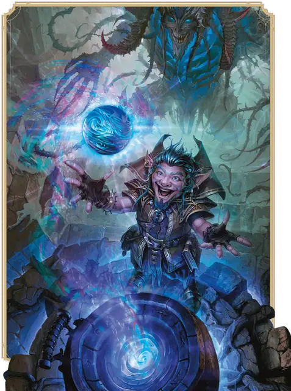

Колдун
Warlock

Основная характеристика Харизма
Кость хитов К8 за уровень Колдуна
Хиты за уровень 1к8 (или 5) + ваш модификатор Телосложения (суммарно минимум 1)
Владение спасбросками Мудрость и Харизма
Владение навыками Выберите два: Запугивание, История, Обман, Природа, Расследование, Религия или Тайная магия
Владение оружием Простое оружие
Тренированность с доспехами Лёгкие доспехи
Начальное снаряжение Выберите А или Б:
(А) Кожаный доспех, Серп, 2 Кинжала, Магическая фокусировка (сфера), Книга (оккультные знания), Набор учёного и 15 ЗМ;
или (Б) 100 ЗМ
| Уровень | Бонус владения | Классовые умения | Таинственные воззвания | Заговоры | Подготовленные заклинания | Ячейки заклинаний | Уровень ячеек |
|---|---|---|---|---|---|---|---|
| 1 | +2 | Таинственные воззвания, Магия договора | 1 | 2 | 2 | 1 | 1 |
| 2 | +2 | Магическая искусность | 3 | 2 | 3 | 2 | 1 |
| 3 | +2 | Подкласс Колдуна | 3 | 2 | 4 | 2 | 2 |
| 4 | +2 | Увеличение характеристик | 3 | 3 | 5 | 2 | 2 |
| 5 | +3 | — | 5 | 3 | 6 | 2 | 3 |
| 6 | +3 | Умение подкласса | 5 | 3 | 7 | 2 | 3 |
| 7 | +3 | — | 6 | 3 | 8 | 2 | 4 |
| 8 | +3 | Увеличение характеристик | 6 | 3 | 9 | 2 | 4 |
| 9 | +4 | Связь с покровителем | 7 | 3 | 10 | 2 | 5 |
| 10 | +4 | Умение подкласса | 7 | 4 | 10 | 2 | 5 |
| 11 | +4 | Таинственный арканум | 7 | 4 | 11 | 3 | 5 |
| 12 | +4 | Увеличение характеристик | 8 | 4 | 11 | 3 | 5 |
| 13 | +5 | Таинственный арканум | 8 | 4 | 12 | 3 | 5 |
| 14 | +5 | Умение подкласса | 8 | 4 | 12 | 3 | 5 |
| 15 | +5 | Таинственный арканум | 9 | 4 | 13 | 3 | 5 |
| 16 | +5 | Увеличение характеристик | 9 | 4 | 13 | 3 | 5 |
| 17 | +6 | Таинственный арканум | 9 | 4 | 14 | 4 | 5 |
| 18 | +6 | — | 10 | 4 | 14 | 4 | 5 |
| 19 | +6 | Эпический дар | 10 | 4 | 15 | 4 | 5 |
| 20 | +6 | Таинственный мастер | 10 | 4 | 15 | 4 | 5 |
как персонаж 1-го уровня
Получите все атрибуты из таблицы «Ключевые атрибуты Колдуна».
Получите умения Колдуна 1-го уровня; они перечислены в таблице «Умения Колдуна».
как мультиклассовый персонаж
Получите следующие атрибуты из таблицы «Ключевые атрибуты Колдуна»: Кость хитов и тренированность с Лёгкими доспехами.
Получите умения Колдуна 1-го уровня; они перечислены в таблице «Умения Колдуна». Ознакомьтесь с правилами мультиклассирования, чтобы определить доступные вам ячейки заклинаний.
Уровень 1: Таинственные воззвания
В своих изысканиях вы обнаружили Таинственные воззвания, кусочки запретных знаний, которые наполняют вас непреходящей магической силой или иными познаниями. Вы получаете одно воззвание на ваш выбор, как, например, Договор гримуара. Воззвания описаны в соответствующем разделе.
Требования. Если у воззвания есть требование, вы обязаны соответствовать этому требованию, чтобы получить его. К примеру, если воззвание требует быть Колдуном 5-го уровня или выше, то вы можете выбрать это воззвание только когда достигнете 5-го уровня Колдуна.
Замена и Получение Воззваний. Когда вы получаете уровень Колдуна, вы можете заменить одно из ваших воззваний другим, удовлетворяющим требованиям. Вы не можете заменить воззвание, если оно требуется для другого воззвания, которое у вас уже есть.
Когда вы достигаете определённых уровней Колдуна, вы получаете больше воззваний на ваш выбор, как показано в столбце «Таинственные воззвания» таблицы «Умения Колдуна».
Уровень 1: Магия договора
Совершив оккультную церемонию, вы заключили договор с мистической сущностью и получили магические силы. Сущность эта — голос в тенях, её личность не ясна — но её дар для вас понятен: это возможность сотворять заклинания. Правила сотворения заклинаний находятся в соответствующей статье. Информация ниже описывает, как использовать эти правила с вашими заклинаниями Колдуна.
Заговоры. Вы знаете два заговора на ваш выбор из списка заклинаний Колдуна. Рекомендуются Мистический заряд и Фокусы. Каждый раз, когда вы получаете уровень Колдуна, вы можете заменить один из ваших заговоров другим заговором из списка заклинаний Колдуна на ваш выбор.
Когда вы достигаете 4-го и 10-го уровней Колдуна, вы изучаете ещё по одному заговору из списка заклинаний Колдуна на ваш выбор, как показано в столбце «Заговоры» в таблице «Умения Колдуна».
Ячейки заклинаний. Таблица «Умения Колдуна» показывает, сколько у вас есть ячеек заклинаний для сотворения заклинаний Колдуна от 1-го до 5-го уровней. В таблице также указан уровень этих ячеек: все они одинакового уровня. Вы можете восстановить все потраченные ячейки заклинаний Магии договора, когда завершаете Короткий или Долгий отдых.
Например, если вы Колдун 5-го уровня, у вас есть две ячейки заклинаний 3-го уровня. Сотворяя заклинание 1-го уровня Ведьмин снаряд, вы должны потратить одну из этих ячеек, и вы сотворяете это заклинание как заклинание 3-го уровня.
Подготовленные заклинания 1-го уровня и выше. Вы подготавливаете список заклинаний 1-го уровня и выше, которые вы можете сотворять с помощью этого умения. Для начала выберите два заклинания 1-го уровня из списка заклинаний Колдуна. Рекомендуются Очарование личности и Сглаз.
Количество заклинаний в вашем списке увеличивается по мере получения уровней Колдуна, как указано в столбце «Подготовленные заклинания» таблицы «Умения Колдуна». Когда это число увеличивается, выбирайте дополнительные заклинания Колдуна до тех пор, пока их количество не сравняется с числом, указанным в таблице. Выбранное заклинание должно быть уровнем не выше, чем показано в столбце «Уровень ячейки» соответствующей строки таблицы. К примеру, когда вы достигаете 6-го уровня Колдуна, вы изучаете новое заклинание Колдуна, уровень которого может быть с 1-го по 3-ий.
Если другие умения Колдуна дают вам заклинания, которые у вас всегда подготовлены, то эти заклинания не учитываются в общем списке подготавливаемых вами с помощью этого умения заклинаний; в остальных отношениях для вас они считаются заклинаниями Колдуна.
Замена подготовленных заклинаний. Каждый раз, когда вы получаете уровень Колдуна, вы можете заменить одно заклинание в вашем списке другим заклинанием Колдуна, для которого у вас есть подходящая ячейка заклинаний.
Заклинательная характеристика. Заклинательной характеристикой для ваших заклинаний Колдуна является Харизма.
Заклинательная фокусировка. Вы можете использовать Магическую фокусировку в качестве Заклинательной фокусировки для ваших заклинаний Колдуна.
Уровень 2: Магическая искусность
Вы можете провести эзотерический ритуал длительностью 1 минуту. Завершив его, вы восстанавливаете потраченные ячейки Магии договора, но не больше, чем половину от доступных (округляя в большую сторону). Как только вы используете это умение, вы не сможете сделать это снова, пока не завершите Долгий отдых.
Уровень 3: Подкласс Колдуна
Вы получаете подкласс Колдуна на ваш выбор. Подкласс — это специализация, которая даёт вам умения на определённых уровнях Колдуна. Вы всегда получаете все умения подкласса, уровень которых не больше вашего уровня Колдуна.
Уровень 4: Увеличение характеристик
Вы получаете черту Увеличение характеристик или другую черту на ваш выбор, требованиям которой вы соответствуете.
Уровень 6: Умение подкласса
Вы получаете все умения подкласса Колдуна 6-го уровня.
Уровень 8: Увеличение характеристик
Вы получаете черту Увеличение характеристик или другую черту на ваш выбор, требованиям которой вы соответствуете.
Уровень 9: Связь с покровителем
В прошлом вы обычно контактировали с вашим покровителем через посредников. Теперь вы можете обращаться к нему напрямую; у вас всегда подготовлено заклинание Связь с иным планом. Используя это умение, вы можете сотворить это заклинание, чтобы связаться с вашим покровителем; в таком случае вы не тратите ячейку заклинаний и автоматически преуспеваете в спасброске этого заклинания.
Как только вы сотворите это заклинание этим умением, вы не можете сделать это снова, пока не завершите Долгий отдых.
Уровень 10: Умение подкласса
Вы получаете все умения подкласса Колдуна 10-го уровня.
Уровень 11: Таинственный арканум
Ваш покровитель дарует вам магический секрет, называемый арканумом. Выберите одно заклинание 6-го уровня из списка заклинаний Колдуна.
Вы можете единожды сотворить это заклинание арканума без траты ячеек, и вы должны завершить Долгий отдых, прежде чем сможете сотворить это заклинание таким образом снова.
Каждый раз, когда вы получаете уровень Колдуна, вы можете заменить это заклинание арканума на другое заклинание Колдуна 6-го уровня.
Уровень 12: Увеличение характеристик
Вы получаете черту Увеличение характеристик или другую черту на ваш выбор, требованиям которой вы соответствуете.
Уровень 13: Таинственный арканум
Ваш покровитель дарует вам ещё один арканум. Выберите одно заклинание 7-го уровня из списка заклинаний Колдуна.
Вы можете единожды сотворить это заклинание арканума без траты ячеек, и вы должны завершить Долгий отдых, прежде чем сможете сотворить это заклинание таким образом снова.
Каждый раз, когда вы получаете уровень Колдуна, вы можете заменить это заклинание арканума на другое заклинание Колдуна 7-го уровня.
Уровень 14: Умение подкласса
Вы получаете все умения подкласса Колдуна 14-го уровня.
Уровень 15: Таинственный арканум
Ваш покровитель дарует ещё один арканум. Выберите одно заклинание 8-го уровня из списка заклинаний Колдуна.
Вы можете единожды сотворить это заклинание арканума без траты ячеек, и вы должны завершить Долгий отдых, прежде чем сможете сотворить это заклинание таким образом снова.
Каждый раз, когда вы получаете уровень Колдуна, вы можете заменить это заклинание арканума на другое заклинание Колдуна 8-го уровня.
Уровень 16: Увеличение характеристик
Вы получаете черту Увеличение характеристик или другую черту на ваш выбор, требованиям которой вы соответствуете.
Уровень 17: Таинственный арканум
Ваш покровитель дарует вам ещё один арканум. Выберите одно заклинание 9-го уровня из списка заклинаний Колдуна.
Вы можете единожды сотворить это заклинание арканума без траты ячеек, и вы должны завершить Долгий отдых, прежде чем сможете сотворить это заклинание таким образом снова.
Каждый раз, когда вы получаете уровень Колдуна, вы можете заменить это заклинание арканума на другое заклинание Колдуна 9-го уровня.
Уровень 19: Эпический дар
Вы получаете черту из категории Эпических даров или другую черту по вашему выбору, требованиям которой вы соответствуете. Рекомендуется Дар судьбы.
Уровень 20: Таинственный мастер
Когда вы используете умение Магическая искусность, вы восстанавливаете все потраченные ячейки Магии Договора.
Подклассы
Архифея
Торгуйтесь с причудливыми Феями
Сила вашего договора проистекает из Страны Фей. Когда вы выбираете этот подкласс, вы, возможно, заключаете сделку с архифеей — такой, как Принц Зимы, Титания из Летнего двора, древняя карга или Королева Воздуха и Тьмы, правительница Сумеречного двора — или же вы взываете сразу к нескольким Феям, сплетая паутину услуг и одолжений. Кем бы ни был ваш покровитель, обычно он непостижим и причудлив.
Уровень 3: Заклинания Архифеи
Магия вашего покровителя гарантирует, что у вас всегда будут подготовлены определённые заклинания. С момента достижения вами уровня Колдуна, указанного в следующей таблице, у вас всегда будут подготовлены соответствующие этому уровню заклинания.
| Уровень Колдуна | Заклинания |
| 3 | Воображаемая сила, Огонь фей, Туманный шаг, Умиротворение, Усыпление |
| 5 | Мерцание, Рост растений |
| 7 | Высшая невидимость, Подчинение зверя |
| 9 | Подчинение личности, Притворство |
Уровень 3: Шаг феи
Ваш покровитель дарует вам способность перемещаться через границы планов. Вы можете сотворять Туманный шаг без траты ячеек заклинаний; вы можете сделать это количество раз, равное вашему модификатору Харизмы (минимум 1 раз), и вы восстанавливаете все потраченные использования по завершению Долгого отдыха.
Кроме того, когда вы сотворяете это заклинание, вы можете выбрать один из следующих дополнительных эффектов.
Освежающий шаг. Немедленно после вашей телепортации вы или другое видимое вами в пределах 10 футов от вас существо получает 1к10 Временных хитов.
Провоцирующий шаг. Каждое существо в пределах 5 футов от покинутого вами пространства должно преуспеть в спасброске Мудрости против вашей Сл спасброска заклинаний, иначе будет совершать с Помехой атаки по всем целям, кроме вас, до начала вашего следующего хода.
Уровень 6: Туманное исчезновение
Вы можете сотворять Туманный шаг Реакцией в ответ на получение урона.
Кроме того, Шаг феи получает дополнительные варианты эффектов.
Скрывающий шаг. Вы получаете состояние Невидимый до начала вашего следующего хода; это состояние также немедленно заканчивается на вас, если вы совершите бросок атаки, нанесёте урон или сотворите заклинание.
Ужасающий шаг. Каждое существо в пределах 5 футов от покинутого вами пространства или пространства, где вы появились (на ваш выбор) должно преуспеть в спасброске Мудрости против вашей Сл спасброска заклинаний, иначе получит 2к10 Психического урона.
Уровень 10: Чарующая защита
Ваш покровитель научил вас защищать ваш разум и тело. Вы получаете Иммунитет состоянию Очарованный.
Кроме того, немедленно после того, как видимое вами существо попадает по вам броском атаки, вы можете Реакцией уменьшить наносимый вам этой атакой урон вдвое (округляя вниз), и вы можете заставить атакующего совершить спасбросок Мудрости против вашей Сл спасброска заклинаний. При провале существо получает Психический урон, равный получаемому вами урону. Использовав эту Реакцию, вы не можете сделать это снова, пока не завершите Долгий отдых. Вы также можете потратить ячейку Магии договора (действий не требуется) чтобы восстановить использование этого умения.
Уровень 14: Завораживающая магия
Ваш покровитель даровал вам способность вплетать телепортацию в вашу магию. Немедленно после того, как вы действием сотворите заклинание школы Очарования или Иллюзии, используя ячейку заклинания, вы можете частью этого же действия сотворить Туманный шаг без траты ячейки заклинания.
Великий древний
Раскройте запретные знания неописуемых существ
Когда вы выбираете этот подкласс вы можете связать себя договором с неописуемой сущностью из Дальнего предела или древним богом — сущностью такой, как Тариздун, Скованный Бог; Заргон Вечный; Хадар, Тёмный Голод; или Великий Ктулху. Вы также можете воззвать сразу к нескольким сущностям, не сковывая себя ярмом договора лишь с одним. Мотивы этих сущностей непостижимы, и Великий древний может быть равнодушен к вашему существованию, но открытые вами тайны, тем не менее, позволяют вам направлять странную его магию.
Уровень 3: Заклинания Великого древнего
Магия вашего покровителя гарантирует, что у вас всегда будут подготовлены определённые заклинания. С момента достижения вами уровня Колдуна, указанного в следующей таблице, у вас всегда будут подготовлены соответствующие этому уровню заклинания.
| Уровень Колдуна | Заклинания |
| 3 | Обнаружение мыслей, Диссонирующий шёпот, Воображаемая сила, Жуткий смех Таши |
| 5 | Подсматривание, Голод Хадара |
| 7 | Смятение, Вызов Аберрации |
| 9 | Изменение памяти, Телекинез |
Уровень 3: Пробуждённый разум
Вы можете создать телепатическую связь между вашим разумом и разумом другого существа. Бонусным действием вы выбираете одно видимое вами в пределах 30 футов от вас существо; вы и это существо можете общаться друг с другом телепатически, пока расстояние между вами не больше миль в количестве, равном вашему модификатору Харизмы (минимум 1 миля). Чтобы вы могли понимать друг друга, каждый из вас должен мысленно говорить на языке, известном другому.
Длительность этой телепатической связи в минутах равна вашему уровню Колдуна. Она заканчивается раньше, если вы установите этим умением связь с другим существом.
Уровень 3: Психические заклинания
Когда вы сотворяете наносящее урон заклинание Колдуна, вы можете изменить тип урона на Психический. Кроме того, когда вы сотворяете заклинание Колдуна школ Очарования или Иллюзии, вы можете делать это без Вербального и Соматического компонентов.
Уровень 6: Провидящий боец
Поддерживая с существом телепатическую связь умения «Пробуждённый разум», вы можете заставить это существо совершить спасбросок Мудрости против вашей Сл спасброска заклинаний. При провале всё время действия вашей связи это существо совершает с Помехой броски атаки по вам, а вы совершаете с Преимуществом броски атаки по этому существу.
Использовав это умение, вы не можете сделать это снова, пока не завершите Короткий или Долгий отдых. Вы также можете потратить ячейку Магии договора (действий не требуется) чтобы восстановить использование этого умения.
Уровень 10: Мистический сглаз
Ваш потусторонний покровитель дарует вам мощное проклятье. У вас всегда подготовленно заклинание Сглаз. Когда вы сотворяете Сглаз, его цель совершает с Помехой спасброски выбранной вами для этого заклинания характеристики, пока заклинание действует.
Уровень 10: Ментальный щит
Ваши мысли не могут быть прочитаны телепатически или иными средствами, если вы не пожелаете обратного. Вы также получаете Сопротивление Психическому урону, и каждый раз, когда существо наносит вам Психический урон, оно получает такое же количество урона, что и вы.
Уровень 14: Порабощение
Всякий раз, когда вы сотворяете заклинание Вызов аберрации, вы можете изменить его так, чтобы оно не требовало Концентрации. В таком случае длительность этого заклинания составит 1 минуту, и, когда Аберрация призвана, она получает Временные хиты в количестве, равном вашему уровню Колдуна + ваш модификатор Харизмы.
Кроме того, в первый раз за ход, когда эта Аберрация попадает по существу, на которое вы сотворили Сглаз, она наносит дополнительный Психический урон, равный дополнительному урону этого Сглаза.
Исчадие
Заключите сделку с Нижними планами
Сила вашего договора проистекает из Нижних планов, царств погибели. Вы можете заключить сделку с повелителем демонов, как Демогоргон или Оркус; архидьяволом, таким как Асмодей; или с исчадием преисподней, балором, юголотом, и даже ночной каргой, если та невероятно сильна. Цели вашего покровителя злы, он стремится совратить или уничтожить всё сущее, в конечном счёте включая и вас — и ваш путь определяется тем, насколько вы сопротивляетесь или помогаете этим целям.
Уровень 3: Заклинания Исчадия
Магия вашего покровителя гарантирует, что у вас всегда будут подготовлены определённые заклинания. С момента достижения вами уровня Колдуна, указанного в следующей таблице, у вас всегда будут подготовлены соответствующие этому уровню заклинания.
| Уровень Колдуна | Заклинания |
| 3 | Огненные ладони, Приказ, Палящий луч, Внушение |
| 5 | Огненный шар, Зловонное облако |
| 7 | Огненный щит, Огненная стена |
| 9 | Гейс, Нашествие насекомых |
Уровень 3: Благословение темнейшего
Когда вы опускаете Хиты врага до 0, вы получаете Временные хиты в количестве, равном вашему модификатору Харизмы + ваш уровень Колдуна (минимум 1 Временный хит). Если кто-либо другой опустит Хиты находящегося в пределах 10 футов от вас врага до 0, вы также получаете это преимущество.
Уровень 6: Удача темнейшего
Вы можете воззвать к своему покровителю, чтобы изменить судьбу в вашу пользу. Когда вы совершаете проверку характеристики или спасбросок, вы можете использовать это умение, чтобы добавить 1к10 к вашему броску. Вы можете сделать это после совершения броска, но только до того, как будет применён его результат.
Вы можете использовать эту способность количество раз, равное вашему модификатору Харизмы (минимум 1 раз), но вы не можете использовать её больше, чем один раз за один бросок. Вы восстанавливаете все потраченные использования по завершению Долгого отдыха.
Уровень 10: Устойчивость исчадия
Всякий раз, когда вы завершаете Короткий или Долгий отдых, выберите один тип урона, за исключением Силового урона. Вы получаете Сопротивление этому типу урона до тех пор, пока вы не выберете для этого умения другой тип урона.
Уровень 14: Бросок через преисподнюю
Один раз в ход, когда вы попадаете по существу броском атаки, вы можете попытаться мгновенно переместить цель через Нижние планы. Это существо должно преуспеть в спасброске Харизмы против вашей Сл спасброска заклинаний, иначе оно исчезает и проносится по кошмарным местам. Если существо не Исчадие, оно получает 8к10 Психического урона. Вне зависимости от типа это существо получает состояние Недееспособный до конца вашего следующего хода, после чего оно возвращается в пространство, из которого исчезло, или ближайшее к нему незанятое пространство.
Использовав это умение, вы не можете сделать это снова, пока не завершите Долгий отдых. Вы также можете потратить ячейку Магии договора (действий не требуется), чтобы восстановить использование этого умения.
Небожитель
Призовите силу Небес
Сила вашего договора проистекает из Верхних планов, царств вечного блаженства. Вы можете заключить соглашение с эмпириеем, коатлем, сфинксом, единорогом или другой божественной сущностью — или вы можете взывать к целому множество таких сущностей, цели которых совпадают с вашими. Ваш договор позволяет ощутить частичку священного света, что освещает мультивселенную.
Уровень 3: Заклинания Небожителя
Магия вашего покровителя гарантирует, что у вас всегда будут подготовлены определённые заклинания. С момента достижения вами уровня Колдуна, указанного в следующей таблице, у вас всегда будут подготовлены соответствующие этому уровню заклинания.
| Уровень Колдуна | Заклинания |
| 3 | Подмога, Лечение ран, Направляющий снаряд, Малое восстановление, Свет, Священное пламя |
| 5 | Дневной свет, Возрождение |
| 7 | Страж веры, Огненная стена |
| 9 | Высшее восстановление, Вызов небожителя |
Уровень 3: Лечащий свет
Вы получаете способность направлять небесную энергию на исцеление ран. У вас есть запас костей к6, питающий это лечение. Количество этих костей равно 1 + ваш уровень Колдуна.
Бонусным действием вы можете потратить кости из этого запаса, чтобы исцелить себя или другое видимое вами в пределах 60 футов от вас существо. Максимальное количество костей, которые вы можете потратить единовременно, равно вашему модификатору Харизмы (минимум 1 кость). Бросьте эти затрачиваемые кости и восстановите Хиты в количестве, равном сумме бросков. Вы восстанавливаете все потраченные кости по завершению Долгого отдыха.
Уровень 6: Сияющая душа
Ваша связь с Небожителем позволяет вам служить проводником сияющей энергии. Вы получаете Сопротивление урону Излучением. Один раз в ход, когда сотворённое вами заклинание наносит урон Излучением или Огнём, вы можете добавить ваш модификатор Харизмы к этому урону по одной из целей этого заклинания.
Уровень 10: Небесная стойкость
Вы получаете Временные хиты, когда используете Магическую искусность или завершаете Короткий или Долгий отдых. Количество этих Временных хитов равно вашему уровню Колдуна + ваш модификатор Харизмы. Кроме того, когда вы получаете эти Временные хиты, выберите до пяти видимых вами существ; эти существа получают Временные хиты в количестве, равном половине вашего уровня Колдуна + ваш модификатор Харизмы.
Уровень 14: Опаляющее возмездие
Когда вам или вашему союзнику в пределах 60 футов от вас нужно совершить Спасбросок от смерти, вы можете выпустить сияющую энергию чтобы спасти существо. Существо восстанавливает Хиты в количестве, равном половине его максимума Хитов существа, и может окончить на себе состояние Опрокинутый. Выберите существ в пределах 30 футов от этого существа; каждое выбранное существо получает урон Излучением, равный 2к8 + ваш модификатор Харизмы, и получает состояние Ослепленный до конца текущего хода.
Использовав это умение, вы не можете сделать это снова до завершения Долгого отдыха.
Нежить
Получите нечестивые силы, отринув смерть
Вы заключили договор с существом, вышедшим за пределы круговорота жизни и смерти: могущественным личом, вампиром или другой Нежитью. Такие существа когда-то и сами были смертным, так что им известно, куда могут завести амбиции, и как проскользнуть мимо врат смерти. Они охотно делятся своими нечестивыми познаниями и тайнами с теми, кто согласится исполнять их волю среди живых.
Уровень 3: Заклинания покровителя-Нежити
С момента достижения вами уровня Колдуна, указанного в следующей таблице, у вас всегда будут подготовлены соответствующие этому уровню заклинания.
| Уровень Колдуна | Заклинания |
| 3 | Воображаемая сила, Глухота/слепота, Луч болезни, Порча |
| 5 | Вызов нежити, Разговор с мёртвыми |
| 7 | Воображаемый убийца, Высшая невидимость |
| 9 | Облако смерти, Преграда жизни |
Уровень 3: Аватар ужаса
Бонусным действием вы преображаетесь в аватара ужасных сил вашего покровителя, получая нижеописанные преимущества на 1 минуту или до тех пор, пока вы не получите состояние Недееспособный или пока не окончите это преображение (действий не требуется). Вы можете принимать облик аватара количество раз, равное вашему модификатору Харизмы (минимум один раз), и вы восстанавливаете все потраченные использования по завершению Долгого отдыха.
Отпечаток жизни. Вы получаете Временные хиты в количестве, равном 1к10 плюс ваш уровень Колдуна.
Бесстрашный облик. Вы обладаете Иммунитетом к состоянию Испуганный. Если у вас есть это состояние, когда вы преображаетесь в аватара, это состояние на вас немедленно оканчивается.
Ужасающий аватар. Один раз в ход, когда вы попадаете по существу броском атаки, можете заставить его совершить спасбросок Мудрости против вашей Сл спасброска заклинаний; при провале цель получает состояние Испуганный до конца вашего следующего хода.
Уровень 6: Прикосновение могилы
Силы вашего покровителя оказали глубокое влияние как на вашу магию, так и на ваше тело. Вы получаете следующие преимущества:
Магический некроз. Некротический урон, наносимый вашими атаками, заклинаниями Колдуна и умениями Колдуна, игнорирует Сопротивление Некротическому урону. Один раз в ход, когда вы сотворяете наносящее урон заклинание, вы можете изменить тип урона этого заклинания на Некротический урон.
Чудовищный некроз. Когда вы преображены в Аватара ужаса, попадаете по существу броском атаки и наносите Некротический урон, вы можете бросить одну дополнительную кость урона при определении наносимого Некротического урона. Вы можете использовать это преимущество только раз в ход.
Выносливость неживых. Вы не получаете Истощения от удушения, недоедания или обезвоживания. Кроме того, вам не нужно спать, и магия не может усыпить вас.
Уровень 10: Некротическая оболочка
Ваша связь с не-жизнью укрепляет ваше тело. Вы получаете следующие преимущества:
Некротическая устойчивость. Вы получаете Сопротивление Некротическому урону. Приняв облик Аватара ужаса, вы обладаете Иммунитетом Некротическому урону.
Нечестивое оживление. Если ваши Хиты опускаются до 0, но вы не убиты мгновенно, вы можете извергнуть поток смертной энергии. Каждое существо по вашему выбору из находящихся в исходящей от вас Эманации радиусом 30 футов должно совершить спасбросок Телосложения против вашей Сл спасброска заклинаний, получая при провале Некротический урон, равный 2к10 плюс ваш модификатор Харизмы, а при успехе только половину этого урона. После этого ваши Хиты становятся равны вашему уровню Колдуна, умноженному на два, и вы получаете 1 уровень Истощения.
Как только вы используете это преимущество, вы не можете сделать это снова, пока не завершите Короткий или Долгий отдых.
Уровень 14: Совершенный ужас
Ваш Аватар ужаса улучшается; приняв этот облик, вы получаете также следующие преимущества:
Защита ужасом. Вы обладаете Сопротивлением Дробящему, Колющему и Рубящему урону.
Призрачный полёт. Вы обладаете Скоростью полёта, равной вашей Скорости, и можете парить. Вы можете перемещаться через других существ и объекты, как через Труднопроходимую местность. Если вы заканчивает ваш ход внутри существа или объекта, то получаете 1к10 Силового урона.
Осквернённая магия. Когда вы сотворяете заклинание Колдуна из школ Призыва или Некромантии, вы сотворяете его без Вербальных, Соматических и Материальных компонентов, за исключением Материальных компонентов с указанной стоимостью или расходуемых заклинанием.
Предтеча
Овладейте остатками силы умирающего бога
Ваш договор черпает силу от умирающего бога — существа, которому некогда поклонялись бесчисленные последователи, ныне покинутого и забытого. Этот умирающий бог, называемый предтечей, мог быть благодетельным, злым или странным и непостижимым, но теперь им движет единственное стремление — вернуть былую мощь. Предтече нужна ваша помощь, и он готов поделиться с вами оставшейся силой.
Уровень 3: Заклинания Предтечи
Магия вашего покровителя гарантирует, что у вас всегда будут подготовлены определённые заклинания. Выберите один из следующих доменов Жреца: Война, Жизнь, Обман или Свет. Заклинания выбранного домена считаются для вас заклинаниями Колдуна. Как только ваш уровень Колдуна достигает уровня Жреца, указанного в таблице заклинаний выбранного вами домена, у вас всегда будут подготовлены соответствующие этому уровню заклинания.
Например, если вы выбрали для этого умения домен Войны, то по достижении 3-го уровня Колдуна у вас будут всегда подготовлены заклинания Духовное оружие, Магическое оружие, Направляющий снаряд и Щит веры.
Уровень 3: Спутник-предтеча
Предтеча обретает физическую форму, черпая силу из вашего пакта. Он использует статистику Спутника-предтечи. Выберите его тип: Исчадие, Небожитель или Нежить. Вы также определяете внешний вид предтечи; какую бы форму он ни принял, предтеча несёт на себе отметины, указывающие на его сверхъестественное происхождение. Например, вы можете решить, что ваш предтеча — это огромный парящий череп с выгравированными символами, круг светящихся рун или изменчивая абстрактная форма.
Предтеча Дружелюбен к вам и вашим союзникам и подчиняется вашим командам. Если вы умираете, предтеча исчезает.
Предтеча в бою. В бою предтеча действует в ваш ход. Он может перемещаться и использовать свою Реакцию самостоятельно, но единственное действие, которое он совершает в свой ход — это действие Уклонение, если вы Бонусным действием не прикажете ему совершить другое действие, из его блока статистики или иное. Вы также можете пожертвовать одной из ваших атак при совершении действия Атака, чтобы приказать предтече совершить действие Удар предтечи. Если выНедееспособны, предтеча действует сам по себе и может использовать любое действие по своему усмотрению, а не только Уклонение.
Исчезновение предтечи. Когда Хиты предтечи опускаются до 0, он исчезает. Вы можете потратить 1 минуту, чтобы провести магическую церемонию и призвать предтечу заново; он появляется с максимумом Хитов в незанятом пространстве в пределах 5 футов от вас. Действием Магия вы можете временно отослать предтечу в карманное измерение. Пока предтеча временно отослан, вы можете действием Магия заставить его появиться в незанятом пространстве в пределах 30 футов от вас. Всякий раз, когда Хиты предтечи опускаются до 0 или когда вы отсылаете в карманное измерение, он роняет в освобождённом пространстве всё, что носил и нёс.
Каждый раз, когда вы завершаете Долгий отдых, вы можете призвать предтечу в другой форме; он появляется в незанятом пространстве в пределах 5 футов от вас. Вы выбираете его внешний вид и тип: Исчадие, Небожитель или Нежить. Если вы уже призвали предтечу этим умением, то он исчезает, когда появляется новый.
Уровень 6: Мощь предтечи
Ваш Спутник-предтеча теперь восстанавливает своё умение Божественная сила всякий раз, когда вы завершаете Короткий или Долгий отдых, а также когда вы используете ваше умение Магическая искусность. Кроме того, пока вы находитесь в пределах 30 футов от вашего Спутника-предтечи, вы обладаетеСопротивлением тем же типам урона, что и он.
Уровень 10: Восстановление предтечи
Когда Хиты вашего Спутника-предтечи опускаются до 0, вы можете Реакцией потратить ячейку заклинаний Магии договора; вместо этого Хиты предтечи становятся равны его максимуму. После этого предтеча телепортируется в видимое им в пределах 30 футов от себя незанятое пространство. Как только вы использовали это умение, вы не можете сделать это снова, пока не завершите Долгий отдых.
Уровень 14: Подобие жизни
Ваш Спутник-предтеча продолжает набирать силу и с вашей помощью может ненадолго принять более могучую форму. Пока предтеча находится в пределах 90 футов от вас, действием Магия вы можете перевоплотить его на 1 час в одну из следующих форм: Дух исчадия (для предтечи-Исчадия), Дух небожителя (предтеча-Небожитель) или Дух нежити (предтеча-Нежить). Статистика предтечи заменяется статистикой выбранного духа, а уровень заклинания равен половине вашего уровня Колдуна (округляя в меньшую сторону; максимум 9), но предтеча сохраняет свою личность, Бонусное действиеБожественная сила, Хиты и Кости хитов.
Предтеча получает Временные хиты в количестве, равном количеству Хитов формы духа. Эти Временные хиты исчезают спустя 1 час, если не были потрачены; превращение оканчивается досрочно, когда у предтечи не остаётся Временных хитов.
Как только вы использовали это умение, вы не можете сделать это снова, пока не завершите Долгий отдых.
Космический покровитель
Некоторые Колдуны получают свою силу от самого космоса, обращаясь к планетам, лун, звёзд и созвездий. Они верят, что разговаривают с богами или богоподобными сущностями, но те скрыты завесами тайны, их облик неясен, а божественная сила передаётся колдуну через звёзды и галактики.
Уровень 3: Заклинания Космического покровителя
С момента достижения вами уровня Колдуна, указанного в следующей таблице, у вас всегда будут подготовлены соответствующие этому уровню заклинания.
| Уровень Колдуна | Заклинания |
| 3 | Волшебная стрела, Гадание, Лунный луч, Мистический заряд, Наставление, Огонь фей, Палящий луч |
| 5 | Духовные стражи, Мерцание |
| 7 | Огненная стена, Огненный щит |
| 9 | Высшее восстановление, Небесный огонь |
Уровень 3: Космическое проведение
Вы всегда знаете Небесный язык и Глубинную речь.
Кроме того, вы можете сотворить Гадание без траты ячейки заклинаний, и вы восстанавливаете возможность сделать это по завершению Долгого отдыха.
Уровень 3: Орбита
Один раз в каждый ваш ход, когда вы промахиваетесь по существу атакой Мистическим зарядом, выпущенный вами луч энергии возвращается к вам миниатюрной кометой и начинает вращаться вокруг вашей головы. Пока такая комета вращается вокруг вас, вы можете вобрать её энергию, чтобы применить один из следующих эффектов:
Космическая сила. Когда вы сотворяете Мистический заряд, вы можете вобрать энергию одной кометы, чтобы увеличить количество создаваемых этим заклинанием лучей на один.
Затмение. Когда по вам попадает рукопашная или дальнобойная атака, вы можете Реакцией вобрать энергию одной кометы, чтобы получить Сопротивление урону этой атаки.
Скорость света. Бонусным действием вы можете вобрать энергию одной кометы, чтобы телепортироваться в видимое вами в пределах 30 футов от вас незанятое пространство.
Одновременно вы можете удерживать на своей орбите не больше комет, чем ваш модификатор Харизмы (минимум 1 комета). Если при получении новых комет их общее количество превышает допустимое, лишние кометы сгорают безвредными вспышками в конце хода.
В ваш ход вы можете потратить одну ячейку заклинаний Магии договора, чтобы немедленно призвать кометы в количестве, равном вашему модификатору Харизмы (минимум 1 комету). Вы призываете одну комету по завершении Короткого отдыха, и вы призываете максимально допустимое количество комет по завершению Долгого отдыха.
Уровень 6: Парад планет
Вы можете сотворить заклинание Духовные стражи без траты ячейки заклинаний на том же уровне, что и уровень ячеек вашей Магии договора, и вы восстанавливаете возможность сделать это по завершению Долгого отдыха.
Когда вы сотворяете это заклинание, вокруг вас кружатся не духи, а призрачные небесные тела; наносимый этим заклинанием урон — на ваш выбор Дробящий или Силовой урон.
Пока вы поддерживаете Концентрацию на этом заклинании, вы можете Бонусным действием изменить область его воздействия; при этом действуют следующие правила:
- радиус Эманации заклинания увеличивается до 25 футов.
- Скорость существ в области воздействия не снижается.
- заклинание не воздействует на цели, находящиеся в пределах 15 футов от вас.
- когда существо проваливает спасбросок против этого заклинания, вы можете немедленно потратить энергию одной кометы, чтобы сотворить Мистический заряд, нацеливаясь на это существо; при этом создаётся только один луч энергии.
В ваши последующие ходы вы можете Бонусным действием изменить область воздействия на обычную.
Каждый раз, когда вы попадаете по существу атакой Мистическим зарядом, вы можете притянуть его по прямой к вам на расстояние вплоть до 10 футов, если оно Большого размера или меньше, и если вы поддерживаете Концентрацию на Духовных стражах. Если существо не находилось в области Духовных стражей до притягивания и оказалось в ней после притягивания, оно совершает спасбросок против этого заклинания, как если бы вошло в его область. Каждое существо может быть притянуто вами таким образом только раз в ход.
Уровень 10: Удар метеора
Один раз в каждый ваш ход, когда вы попадаете по существу атакой Мистическим зарядом, вы можете вызвать взрыв энергии этого луча. При этом каждое существо в пределах 10 футов от цели должно совершить спасбросок Ловкости, при провале получая 3к6 урона Огнём.
Этот урон увеличивается до 4к6 по достижению вами 14-го уровня Колдуна и до 5к6 на 17-м уровне.
Уровень 14: Сверхновая
Когда вы сотворяете Мистический заряд, вы можете создать на один луч энергии больше.
Кроме того, вы можете использовать Удар метеора каждый раз, когда совершаете Критическое попадание атакой Мистическим зарядом, а также когда попадаете атакой Мистическим зарядом по существу, находящемуся в области ваших Духовных стражей. Эти использования Удара метеора не тратят вашу возможность использовать его раз в ход при обычных условиях.
Описание
Колдуны — искатели знаний, что вплетены в полотно мультивселенной. Свои поиски магической силы они нередко начинают, зарываясь в фолианты запретных знаний, погружаясь в таинственные ритуалы, призывающие силы экстрапланарных сущностей, или разыскивая места силы, где можно ощутить их влияние. Не успев оглянуться, каждый Колдун обнаруживает себя заключившим договор с могущественным покровителем. Изыскивая древние знания у таких существ как ангелы, архифеи, демоны, дьяволы, карги и внеземные существа с Дальнего предела, Колдуны собирают по кусочкам магические секреты, усиливающие их собственную мощь.
Колдуны рассматривают своих покровителей как ресурс, как средство достижения магической силы. Некоторые Колдуны уважают, почитают или даже любят своих покровителей; некоторые служат своим покровителям неохотно; другие же ищут способы уничтожить своего покровителя, используя ту же силу, что даёт им покровитель.
Заключив договор, Колдун уже не может утолить свою жажду знаний и силы обычной учёбой: большинство Колдунов проводят свои дни в поисках большей силы и более глубоких знаний, что обычно означает необходимость участия в тех или иных приключениях.